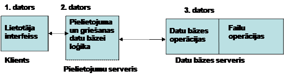
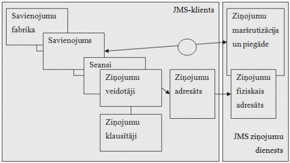
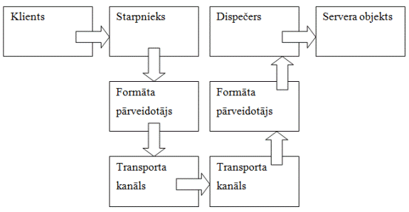
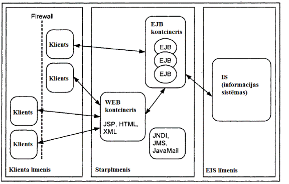

6.1.
Tīkla pielietojuma jēdziens un to funkcionālas daļas
6.2. Divu posmu un trīs posmu pielietojuma arhitektūras
shēmas
6.3. TOS transporta apakšsistēmas un procesu sadarbības
organizēšanas līdzekļu kopu raksturojums
6.4. Soketu mehānisma kopējais raksturojums
7.1. Dalītu pielikumu izstrādes tehnoloģiju kopējais
raksturojums
7.7. Microsoft .NET Remoting tehnoloģija
6.1. Tīkla pielietojuma jēdziens un to
funkcionālas daļas
Datoru apvienojums tīklā ļauj programmām, kas izpildās uz dažādiem datoriem, operatīvi sadarboties un kopīgi risināt lietotāju uzdevumus. Saite starp dažām programmām var būt tik cieša, ka tās ērtāk uzskatīt kā viena pielietojuma daļas, kuro šajā gadījumā sauc par dalīto vai tīkla pielietojumu.
Var uzrādīt trīs pamat parametrus, kas raksturo lietojuma darba organizāciju tīklā:
• Pielietojuma sadalīšanas uz daļām, kas izpildās dažādos datoros.
• Specializēto serveru izdalīšana tīklā, uz kuriem izpildās visiem pielietojumiem kopējas funkcijas.
• Sadarbošanās veids starp pielietojumu daļām, kas izpildās dažādos datoros.
Eksistē dažādi modeļi pielietojuma sadalīšanai uz daļām. Vienā no tām ir piedāvāts sadalīt pielietojumu sešās funkcionālās dāļās:
• Līdzekļi datu attēlošanai uz ekrāna, piem., grafiskā lietotāja interfeisa līdzekļi;
• Datu attēlošanas uz ekrāna loģika, kas apraksta lietotāja sadarbošanās ar pielikumu noteikumus un iespējamus scenārijus, t.i. izvēle no izvēlnes sistēmas, elementa izvēle no saraksta utt.;
• Lietišķā loģika, t.i. lēmumu pieņemšanas noteikumu kopa, skaitļošanas procedūras un operācijas;
• Datu loģika, t.i. operācijas ar datu bāzē glabājamiem datiem, ko vajag izpildīt lietišķās loģikas realizēšanai;
• Datu bāzes iekšējas operācijas, t.i. DBVS darbības, kas parādās kā atbilde uz datu loģikas pieprasījumiem, piem., ieraksta meklēšana pēc noteiktām pazīmēm;
• Failu operācijas, t.i. standarta operācijas ar failiem un failu sistēmu, ko parasti ir OS funkcijas.
Uz
šī modeļa bāzes var realizēt vairākas shēmas pielietojuma sadalīšanai uz daļām
tīkla dažādiem datoriem – divu un trīs posmu shēmas.
6.2. Divu posmu un trīs posmu pielietojuma
arhitektūras shēmas
Divu posmu pielietojuma sadalīšanai var uzrādīt trīs variantus (att.6.1.):
1.variantā
lietotāja dators strādā ka termināls, kas tikai atspoguļo datus, un visas
pārējas funkcijas izpilda centrālais dators, kura ražotspēja būs ierobežota ar
lietotāju skaitu, kas izmanto šo pielietojumu. Šī shēma faktiski atkārto daudz terminālu
sistēmas organizāciju.
2.variantā (“failu serveris”) visas
pielietojuma daļas, izņemot failu operācijas, tiek izpildītas uz klienta
datora. 2.dators izpilda faila servera
lomu. Šīs shēmas galvenais trūkums -
klienta datoram jābūt ļoti jaudīgam.
3.variantā visas funkcijas ir
sadalītas starp klientu un serveri vienmērīgi. Visbiežāk serveris izpilda datu
bāzes iekšējas operācijas un failu operācijas, bet klienta dators – visa
pielietojumam specifiskas funkcijas. Ar šo shēmu ir saistīts termins
“klientserveris”, kaut gan šis termins ir taisnīgs arī visām iepriekšējām shēmām.

6.1.att. Divu posmu pielietojuma arhitektūras shēmas
Trīs posmu arhitektūra (att.6.2.) ļauj
labi sadalīt slodzi starp tīkla datoriem un ļauj izstrādāt specializētus
serverus un dalītus pielietojumus.

6.2.att. Trīs posmu pielietojuma arhitektūras shēma
Pielietojumu serveris izpilda
vairāku pielietojumu specifiskas un svarīgākas daļas, kas ļauj samazināt
prasības klientu datoriem. Trīs posmu shēmas bieži izmanto arī dalītu pielikumu
kopējo funkciju centrālai realizēšanai tīklā. Programmatūru, kas izpilda šādas
funkcijas, sauc par starpslāņa programmatūru (middleware). Lielajos tīklos
klientu un serveru pielietojumu saitei izmanto arī citus līdzekļus, kas arī
pieder pie middleware: MOM (message-oriented middleware); RPC (Remote Procedure
Call); ORB (Object Request Brocer).
Galvenā atšķirība starp dalītām un
centralizētām sistēmām ir procesu sadarbības metode. Centralizētās sistēmās
šādai sadarbībai izmanto koplietojamu atmiņu (datu kopīga izmantošana). Dalītās
sistēmās procesu sadarbība tiek organizēta kā ziņojumu apdare, t.i.
ziņojumu pārsūtīšana pa tīklu un ziņojumu glabāšana. (Ziņojums – rakstzīmju secība, kas
izveido datu bloku, ko pārraida datoru tīklos. Ziņojumu formatē
process-nosūtītājs un šo ziņojumu saprot process-saņēmējs.)
6.3. TOS transporta apakšsistēmas
un procesu sadarbības organizēšanas līdzekļu kopu raksturojums
Tīkla operētājsistēmās eksistē transporta apakšsistēma, kas nodrošina līdzekļu kopu procesu sadarbības organizēšanai tīklā. Visi tīkla dienesti, kas piedāvā lietotājiem dažādus pakalpojumus (pieeja attāliem failiem, printeriem, pastkastēm), izmanto divus komunikācijas primitīvus – send (sūtīt) un receive (saņemt). Uz šo primitīvu bāzes var veidot jaudīgus tīkla komunikācijas līdzekļus – dalītas failu sistēmas, attālināto procedūru izsaukšanas dienests, kas savukārt kalpo par bāzi citu tikla dienestu darbam.
Komunikācijas primitīvu pamat raksturojumi:
• Adresācijas veids;
• Sinhronizācijas esamība;
• Buferizācijas veids;
• Piegādes drošuma pakāpe.
Procesu sinhronizācijas veids ir procesu sadarbības centrālais jautājums, kas ir pilnībā noteikts ar OS-ā izmantojumiem komunikācijas primitīviem: bloķējošie (sinhronie) vai nebloķējošie (asinhronie) (6.3.att.).
Ja izmanto bloķējošo primitīvu send, tad process, kas izpildīja šo pieprasījumu tiek apturēts līdz tam brīdim, kamēr nesaņems ziņojumu-apstiprinājumu par sava ziņojuma pieņemšanu. Līdzīgi, bloķējoša primitīva receive izsaukšana aptures procesu, kas bija izsaukts, līdz tam brīdim kamēr viņš nesaņems ziņojumu.
Ja izmanto nebloķējošus primitīvus send un receive, vadība tiek atgriezta procesiem uzreiz pēc noteikšanas, kur atmiņā atrodas ziņojumu buferis. Nebloķējošo primitīvu izmantošanas gadījumā par ziņojuma pienākšanu buferī procesu-saņēmēju var informēt divējādi:
• Aptauja (pooling), kas paredz vēl viena primitīva test izmantošanu, ar kura alīdzību process-saņēmējs pārbauda bufera stāvokli;
• Pārtraukums (interrupt), izmanto programmas pārtraukumu lai informētu procesu-saņēmēju par ziņojuma pienākšanu buferī.

6.3.att. Procesu sinhronizācijas veidi
Procesu pārraides laikā var būt situācijas, kad process-saņēmējs nav gatavs pienākoša ziņojuma apstrādei, bet ir svarīgi lai OS saglabātu šo ziņojumu buferī tālākai apstrādei.
Ja izmanto bloķējošus primitīvus var iztikt bez buferiem, jo ziņojums no sūtītāja atmiņas pa tīklu būs pieņemts un izvietots saņēmēja atmiņā pa taisno. Bet praksē tomēr izmanto buferi, kura izmērs ir vienāds vienam ziņojumam un šo buferi pārvalda OS.
Ja izmanto nebloķējošus primitīvus buferizācija ir vajadzīga obligāti, jo sūtītājs var sūtīt ziņojumu vienmēr, negaidot apstiprinājumu par pieņemšanu. Buferim jābūt ar neierobežotu izmēru, bet tas nav reāli un tāpēc vajag pārbaudīt bufera pārpili.
OS
piedāvā lietišķiem procesiem speciālus primitīvus ziņojumu bufera izveidošanai,
piem., create_buffer, ko procesi izmanto pirms send un receive. Tādu buferu bieži sauc par portu
(port), vai pastkasti (mailbox).
Viens no adresācijas veidiem ir tīkla adapteru adrešu izmantošana.
Bet to var pielietot tikai viena lokāla tīkla ietvaros. Biežāk izmanto
adresēšanas sistēmu, kad adrese sastāv no divām daļām – datora numurs un
procesa, kuram ziņojums ir paredzēts, numurs. Datora identificēšanai izmanto
IP-adreses (piem., 185.23.123.26); procesa identificēšanai – procesa unikālo
identifikatoru, bet biežāk – dienesta adresi, kas ir ļoti ērti jo šādu dienestu
kopa ir ierobežota ( FTP,SMB, NFS, HTTP, SNMP) un tiem var piešķirt noteiktas
adreses, piem., 21. ports atbilst FTP dienestam.
Adresācijas vienkāršošanai izmanto
simboliskus vārdus (piem., URL notācija Internetā), kad adrese sastāv no mezgla
un dienesta vārdiem, piem., ftp://arc.bestcompany.ru. Šī pieeja prasa lai sistēmā būtu
dienests, kas pārveido simboliskus vārdus ciparu identifikatoros, bet ļauj arī
pārveidošanas laikā izvēlēties datoru, kas visvairāk der ziņojuma apstrādei.
Piegādes drošums nozīmē, kā adresāts saņems ziņojumu. Šo problēmu atrisināšanai izmanto
trīs pieejas. Pirmajā sistēma neuzņem uz sevi nekādu atbildību par ziņojuma
piegādi, drošas piegādes realizācija ir lietišķa programmētāja uzdevums. Šo
piegādes pieeju sauc par datagrammas (datagram). Otrajā variantā saņēmēja
datora kodols aizsūta apstiprinājumu par ziņojuma saņemšanas. Apstiprinājumu
apdari izpilda OS un to “neredz” ne sūtītāja, ne saņēmēj procesi. Trešajā
varianta ir paredzēta atbilžu izmantošana, kā apstiprinājums par ziņojuma
saņemšanu, kas ir raksturīgs klientserveru dienestiem.
Primitīvu realizēšanai ar piegādes
drošuma dažādu pakāpi OS izmanto dažādus komunikācijas protokolus. Piem.,
IP-tiklā drošai ziņojumu pārraidei izmanto TCP protokolu, ja drošums nav
svarīgs – UDP protokolu. Analoģiski Novell tīklos izmanto SPX un IPX
protokolus. OSI stekā eksistē viens transporta protokols, kas atbalsta dažādus
režīmus, kas atšķiras ar drošuma pakāpi.
6.4. Soketu mehānisma kopējais
raksturojums
Soketu (sockets) mehānisms nodrošina ērtu un universālu interfeisu ziņojumu apmaiņai, ko var izmantot dalīto tīklu pielietojumu izstrādei. Soketu mehānisma universālumu nodrošina šādas koncepcijas:
•
Neatkarība no zemāk izvietotiem
tīkla protokoliem un tehnoloģijām. Šim nolūkam izmanto komunikācijas domēnus,
kurus raksturo komunikāciju īpašību kopa (tīkla mezglu un resursu dēvēšana,
tīkla savienojumu raksturojums utt., piem., Interneta domēns ar steka
protokoliem TCP/IP).
•
Abstraktā
savienojuma gala punkta izmantošana, ko sauc par soketu. Sokets ir punkts, caur kuru ziņojumi
aiziet tīklā un pienāk no tīkla. Tīkla savienojums starp diviem procesiem tiek
nodrošināts ar diviem soketiem – katrs process pielieto savu soketu.
•
Soketam
var būt kā augstā līmeņa simbolisks vārds, tā arī zemā līmeņa adrese, kas
atspoguļo komunikācijas domēna adresācijas specifiku.
•
Katram
komunikācijas domēnam var eksistēt dažādu tipu soketi, kas ļauj uzdot
sadarbības noteiktu veidu, kas ir svarīgs domēniem. Piem., vairākos domēnos ir kā datagrammas
savienojums, tā ari pavedienu savienojums, kas garantē drošu un sakārtotu
ziņojumu piegādi.
Ziņojumu apmaiņai soketu mehānisms piedāvā
sekojošus primitīvus, kas ir realizēti kā sistēmas izsaukumi:
•
s
= socket(damain, type, protocol) - soketa izveide;
•
binds(s,
addr, addrlen) – soketa sasaiste ar adresi;
•
connect(s,
server_addr, server_addrlen) – pieprasījums savienošanai ar attālo soketu;
•
listen(s,
backlog) – pieprasījuma uz savienošanu gaidīšana;
•
snew
= accept(s, client_addr, client_addrlen) - pieprasījuma uz savienošanu
pieņemšana;
•
write(s,
message, msg_len) – ziņojuma sūtīšana pa uzstādīto saiti;
• nbytes = read(snew, buffer, amount) - ziņojuma pieņemšana pa uzstādīto saiti;
•
sendto(s,
message, receiver_address) - ziņojuma sūtīšana bez saites uzstādīšanas;
•
amount
= recvfrom(s, message, sender_address) - ziņojuma pieņemšana bez saites
uzstādīšanas.
Vēl viens ērts mehānisms, kas atvieglo OS un pielietojumu komunikāciju tīklā, ir attālināto procedūru izsaukšanās mehānisms, kura pamatā ir īdēja par to, lai attālinātas procedūras izsaukšana būtu līdzīga lokālas procedūras izsaukšanai.
7.1. Dalītu pielikumu izstrādes tehnoloģiju
kopējais raksturojums
Dažas
lietojumu izstrādes tehnoloģijas paredz dalīto lietojumu izstrādi, jo:
- dati, kurus izmanto lietojums, ir
sadalīti (Lietojumiem jāizpildās vairākos datoros, jo to izmantojamie dati
ir sadalīti vairākos datoros. Īpašnieks var atļaut attālināto piekļuvi datiem, bet tie tiek
glabāti kā lokālie. Tas nosaka datu sadalītas glabāšanas organizāciju.);
- izpildāmas
darbības ir sadalītas (Daži lietojumi tiek dalīti, jo tiem ir nepieciešams
izmantot specifisko uzdevumu paralēlās aprēķināšanas priekšrocības, piem.,
uzdevumiem, saistītiem ar dešifrēšanu. Citi lietojumi tiek izpildīti dažos
datoros, jo ir nepieciešams izmantot specifisko sistēmu priekšrocības, lai
realizētu savus algoritmus.);
- lietojuma
lietotāji ir “sadalīti” (Lietojumus izstrādā kā dalītus, jo tos izmanto vairāku lietotāju sasaistei
un mijiedarbībai. Katrs lietotājs izpilda dalītā lietojuma fragmentu un
aktīvi izmanto kopējus objektus, kas parasti tiek izpildīti vienā vai
vairākos serveros.)
Dalīto
lietojumu atsevišķo daļu savienošanas problēma eksistē gandrīz tik ilgi, cik
eksistē pati aprēķināšanas tehnika. Tāpēc arī tehnoloģiju paaudzes šā uzdevuma
atrisinājumam nomainās viens aiz cita – no kopējo atmiņas apgabalu izmantošanas
līdz mūsdienīgām sistēmām MOM (uz ziņojumiem orientētās starpprogrammatūras) un
integrācijas līdzekļu uz caurspīdīgu biznesa procesu bāzes.
7.2.
RPC tehnoloģija
Remote Procedure Call (RPC) paliek par
svarīgu tehnoloģiju, kuru izmanto dalīto lietojumu komponentu manuālai
savienošanai. Tā balstās uz sinhronā mijiedarbības režīma starp diviem moduļiem
(klientu un serveri), kas nozīmē, ka klienta darbs tiek bloķēts līdz uzdevuma
apstrādes nobeigumam uz servera puses.
Lai
uzstādītu savienojumu, izsaukuma un rezultāta atgriešanas pārraidi, klients un
serveris izmanto speciālus programmiskus aizbāžņus (client/server stub). Šīs procedūras
nerealizēs nekādu lietišķu loģiku, bet tikai izolē lietišķus moduļus no tīklu
komunikāciju līmeņa. Parasti šo aizbāžņu aprakstus ģenerē izstrādāšanas vide.
Gan klientu, gan servera programma var izsaukt tos kā parastas
lokāli-izpildāmas funkcijas. Tāda savienojuma uzstādīšanai nepieciešams
izpildīt veselu papildus operāciju rindu gan no klienta puses, gan no
izpildīšanas vides puses. Šīs operācijas ir diezgan tipiskas visām līdzīgām
tehnoloģijām.
Kopējā
gadījumā RPC mehānisms rada statiskas attiecības starp dalīto lietojumu
komponentiem: klientu procesa piesaiste pie konkrētiem serveru surogātiem
notiek kompilācijas un komponēšanas etapā un nevar būt izmainīta izpildes
laikā. Ar to RPC neizdevīgi atšķiras no sistēmām, kas ir orientētas uz ziņojumu
apmainīšanu (МОМ), kas dod iespēju dinamiski izvēlēties serveri, vai no dažiem
transakciju monitoriem, kas atbalsta optimāla slodzes uz serveriem izkārtojuma
iespējas un atjaunošanas līdzekļiem atteices gadījumā.
RPC
ļoti bieži izmanto dažādās citās tehnoloģijās. Piemēram, uz RPC tiek bāzēta
Windows COM/DCOM modeļa komunikāciju līmenis. Galvenais RPC sistēmu trūkums ir
mijiedarbības sinhronizācijas nepieciešamībā, kura obligātais nosacījums ir
stabila savienojuma uzstādīšana starp lietojumiem (RPC tehnoloģijai ir
papildinājumi, kas emulē asinhrono režīmu, bet tiem nav МОМ priekšrocību).
Tātad dalītas sistēmas ir jutīgas komunikācijas kanālu drošumam un pieejamībai.
7.3.
COM/DCOM tehnoloģijas
Komponentu
Objektu Modelis (COM) ir Microsoft kompānijas tehnoloģiskais standarts, kas
ļauj veidot programmatūras sistēmas, izmantojot sadalītās komponentes. Jebkurā
sadalītā komponente var tikt izmantota atkārtoti citās programmatūras sistēmās.
COM tehnoloģijas standarts varētu būt universāls un platformu-neatkarīgs, taču
pārsvarā tiek izmantots Microsoft Windows saimes operētājsistēmās.
Komponentu
modelis COM (Component Object
Model) ir lietojumu dinamiskas savienošanas līdzekļu
DDE (Dynamic Data Exchange)
mantinieks, kas bija iekļauti jau Microsoft Windows pirmajās versijās.
Galvenais
jēdziens, kas tiek izmantots strādājot ar COM standartu ir COM-komponente.
Programmatūras sistēmas, kas ir bāzētās uz COM standarta faktiski nav autonomas
programmatūras sistēmas, bet ir vairāku COM komponentu kopa, kas apraksta kā
šīs COM komponentes savā starpā sadarbojas. Katrai COM komponentei ir savs
unikāls identifikators GUID, kuru vienlaicīgi var izmantot vairākas
programmatūras sistēmas. Katrai COM komponentei tiek definēts savs interfeiss,
kas apraksta COM komponentes iespējas. Tas ļauj sadalīt lietojumu, kas strādā
uz atsevišķa personāla datora, uz komponentiem, kurus raksturo skaidri
aprakstīti interfeisi.
COM
modeļa variants, kas dod iespēju būvēt dalītus lietojumus, ir DCOM (Distributed Component Object Model). Šīs modelis
izplata attālināto procedūru izsaukuma principus uz COM objektu lietojumiem.
DCOM attālināto objektu mijiedarbība tiek bazēta uz Distributed Computing Environment Remote Procedure Call (DCE RPC)
specifikācijas. Šajā gadījumā vide paslēpj no klienta tīklu mijiedarbības
detaļas.
DCOM
atšķirībā no RPC dod iespēju dinamiski savienot attālinātus objektus: klients
var vērsties pie serverim-objektam izpildīšanas fāzē, pat ja kompilācijas etapā
klientam nav informācijas par servera īpašībām. Informāciju par objektiem, kas
ir pieejami uz servera izpildīšanas etapā, klients saņem no speciālas meta datu
par objektiem glabātavas (Type Library),
izmantojot OLE Automation mehānismu. Tāpēc var mainīt
serveru funkcionalitāti, neveicot būtiskas izmaiņas klientu programmas
komponentu kodā.
DCOM
modelī ir iespējams izmantot interfeisu apraksta valodas IDL (Interface Definition Language) Microsoft
radīto modifikāciju - DCE IDL, bet tai nav šeit svarīgas lomas un tā kalpo
tikai objektu apraksta ērtībai. Reāla objektu DCOM integrācija notiek nevis
abstraktu interfeisu līmenī, bet binārā koda līmenī.
Windows
ir iespēja grupēt DCOM objektus transakciju ietvaros. Par to atbild Microsoft
operētājsistēmas Transaction Server (MTS) dienests.
Tas piedāvā visas transakciju monitora standarta funkcijas. Svarīga MTS īpašība
ir tā, ka transakciju īpašības var uzdot COM konteinera līmenī (Windows iekļauj
arī Distributed Transaction
Service dienestu, kas atbild par dalīto transakciju
koordināciju datu bāzēs). MTS bija viena no pirmajām komerciālām sistēmām, kas
kombinēja transakciju un komponentu atbalstu. MTS vislabāk aprakstīt kā
konteineri transakciju komponentiem vai kā lietojumu serveri. Lietojumi, kurus
vadā MTS, ir COM komponentu salikumi, kas ir noformēti dinamiski pieslēdzamo
DLL bibliotēku veidā (Dynamic Link
Libraries). No tehniska redzes viedokļa ir daži
operētājsistēmu servisi, kas kontrolē iniciētu COM komponentu darbu un atbild
uz izsaukumiem no šiem komponentiem. Dotie servisi arī nodrošina automātisku
transakciju atbalstu, drošības nodrošinājumu, datu bāžu savienojumu pūlu
radīšanu, izpildes plūsmu atbalstu un objektu stāvokļu pārvaldi.
DCOM/MTS
vide ir ērta dalīto lietojumu radīšanai, bet to var izmantot tikai Windows
platformā, kas ne vienmēr ir pieņemams korporatīviem lēmumiem. Svarīgas
problēmas, kas rodas pie Windows lietojumu izstrādes, ir drošuma, ražotspējas
un izmantojamu komponentu bibliotēku (un ar tiem saistīto DLL bibliotēku)
versiju kontroles problēmas.
Ir
nepieciešams ievērot arī, ka sakarā ar pāreju uz Microsoft .Net platformu
korporatīvas klases lietojumu izstrādei DCOM tehnoloģiju ir vērts aplūkot kā
mantotu un ņemt vērā tikai no liela skaita lietojumu, kuri ir uzrakstīti uz
DCOM, integrācijas puses jaunās KIS (korporatīvās informācijas sistēmas).
7.4.
CORBA tehnoloģija
Pagājušā
gadsimta 90.gadu vidū dalīto lietojumu izstrādei sāka pielietot CORBA (Common Object Request
Broker Architecture -
objektu pieprasījumu starpnieka kopēja arhitektūra) tehnoloģiju. Tajā ir iekļautas vairākas idejas no
COM un RPC, bet tās tiek izmantotas citādi.
CORBA arhitektūras atslēgu
komponents ir IDL valoda, ar kuras palīdzību apraksta izsaucamo serveru
komponentu interfeisus. Uz tās bāzes kompilatori ģenerē klases-aizbāžņus (stubs)
un klases-starpniekus (proxy). Tos iedarbina programmas attiecīgi klienta un
servera pusē kā parastus lokālus objektus, bet īstenībā tie atbild par
starpniecību ziņojumu pārraidē pie attālinātām sistēmām. Ar to palīdzību
nodrošina arī neatkarību no konkrētas objektorientētas valodas.
Serveru
objektu pārvaldībai tiek pielietots pieprasījumu starpnieks (Object Request Broker, ORB). Viena no tā funkcijām ir nodrošināt klientam
iespēju saņemt informāciju par pieejamiem objektiem un to īpašībām. Atšķirībā
no DCE IDL valodas CORBA IDL valoda atbalsta objektorientētas paradigmas
pamatjēdzienus (iekapsulēšanu, polimorfismu un mantošanu). Ir tāpat attālināto
objektu dinamiskās sasaistes iespēja - to realizē dinamiska DII (Dynamic Invocation Interface)
izsaukuma interfeiss. Tomēr šā interfeisa atbalsts ir opcionāls
un atkarīgs no ORB realizācijas.
CORBA
mijiedarbībai tiek izmantots speciāls IIOP (Internet InterORB
Protocol) protokols. Visa tīklu un objektu
komunikāciju mehānika tiek slēpta no klienta – starpnieks automatizē objektu
īpašību pārraides procesus – datu pakošanu un sadalīšanu (marshaling/unmarshaling), risina savienojuma uzstādīšanas tehniskas
sarežģītības. Tomēr speciāla protokola izmantošana pieprasa dažas papildus
pūles tā transporta organizācijai caur ugunsmūra programmām pie korporatīva
tīkla robežas.
CORBA no paša sākuma bija izstrādāta
ar starpplatformu atbalstu. Var atrast tās realizācijas visiem Unix paveidiem,
Windows un daudzām citām operētājsistēmām. Tas ir arī galvenā priekšrocība no
Microsoft objektu modeļa. Bet bieži šīs realizācijas spēcīgi atšķiras.
Standarts noteic apmēram divdesmit pieprasījumu starpnieku dienestu, no kuriem
bieži starpniekos realizē tikai 3-4 pamat servisus. Produkti, kuri ir īpaši
zināmi uz šodienu ir: Borland kompānijas VisiBroker un Enterprise Server, BEA
Tuxedo un IONA Orbix.
Dinamiska CORBA izsaukuma mehānisms
ir sarežģīts realizācijā. Un līdz ar tā nepietiekamu integrāciju tradicionālos
izstrādāšanas līdzekļos tās ilgi nevarēja saņemt plašu pielietošanu. Pie tam,
ORB sistēmas līdzīgi RPC sistēmām, ir orientētas uz sinhronu saikni. Uz šodienu
CORBA ir liela mantota nozīme, bet jauni sadalītie lietojumi biežāk tiek
izstrādāti ar J2EE un Microsoft .Net tehnoloģijām. Var pamanīt arī CORBA un
Java platformas konverģences tendenci.
7.5. RMI metode
Programmēšanas valodā un platformā
Java no paša sākuma bija iebūvēti līdzekļi metožu sinhronam attālinātam
izsaukumam RMI (Remote Method Invocation), kas pēc būtības ir ļoti līdzīgs
CORBA. Tāpat kā CORBA, RMI tiek izmantoti aizbāžņi un "karkasi"
(objektu interfeisu apraksti), pieprasījumu starpnieks RMI. Vienkāršotā soļu secība programmas moduļu sasaistei izskatās tādi:
1. Nepieciešams
noteikt attālināti izsaucamā objekta interfeisu kā atvasinājumu no standarta
Java interfeisa java.rmi.RemoteException;
2. Pēc tam realizēt
(uzrakstīt darbības loģiku) šā interfeisa metodes vajadzīgā objektā;
3. Pēc tam uz
attālinātās piekļūšanas interfeisa pamata noģenerēt RMI aizbāzni klientam (ar rmic utilītprogrammas palīdzību);
4. Serveru
lietojuma palaišanas laikā nepieciešams piereģistrēt klasi uz vārdu servera;
5. Klients ar JNDI
vārdu dienesta palīdzību saņem atsauci uz attālinātā objekta eksemplāru un
pārveido to attālinātā objekta interfeisa tipā;
6. Pēc tam klients
mijiedarbojas ar saņemto objektu kā ar lokālu. Klasei-starpniekam pie tam jābūt
klāt klientu lietojuma pakā - tas atbild par izsaukumu pārveidi un paku
aizsūtīšanu uz attālināto serveri.
Par metožu parametriem, kurus izsauc
klienta pusē, var izmantot Java objektus. Modelis atbalsta gan pārraidi caur
atsauci, gan pārraidi caur vērtību. Starpnieks un RMI serveris paslēpj no
programmētāja arī objektu parametru datu struktūru pārveidošanas procesu bitos
un atpakaļ sarežģītības. Šai ziņā RMI ir analoģisks Microsoft .Net Remoting.
RMI un .Net Remoting tehnoloģiju vēl viena līdzība ir objekta aktivizācijas
iespējā pēc klienta pieprasījuma, kas jau sen eksistē uz servera.
Savienojumam RMI izmanto savu
komunikācijas protokolu JRMP. Parasti tas strādā virs transporta protokola TCP,
bet var būt arī izņēmumi, piemēram BEA WebLogic serveris pielieto T3 protokolu.
Svarīgs
atzīmēt CORBA un RMI konverģenci. Starpnieks, kas apmierina CORBA jaunāku
standartu, ir Java 2 Platform Standard Edition daļa, turklāt tas arī ir uzrakstīts uz Java un
tāpēc ir pārnesams. Tas var tāpat mijiedarboties ar citiem CORBA savienojamiem
starpniekiem. Bet galvenais, starpnieks atbalsta vienlaikus gan komponentu
izsaukumus caur IIOP protokolu, gan izsaukumus caur RMI. Pie tam var organizēt
mijiedarbību starp divām Java/RMI platformām caur IIOP, kas ir bieži
nepieciešams trafika caurlaidei caur ugunsmūri. Java lietotājam arī nav
nepieciešamības veikt jebkādus papildus licenču maksājumus CORBA izmantošanai.
CORBA
tehnoloģijas atbalsts ir arī J2EE. Izmantojot RMI-IIOP funkciju, programmētājs
var ar RMI API palīdzību vērsties CORBA serverim. Tas ļauj izsaukt no
Enterprise Java Beans (EJB) komponenta attālinātos
objektus, kas ir uzrakstīti gan uz Java, gan uz citiem CORBA savienojamām
valodām. Var arī izsaukt EJB objektus no svešām programmām, izmantojot CORBA
servisus.
Bet
neskatoties uz visām šīm iespējām RMI tehnoloģija ir pārāk zemā līmeņa
tehnoloģija un sarežģīta tiešai dalīto lietojumu izstrādei. Tāpēc tā faktiski
tika apslēpta Java korporatīvu objektu tehnoloģijā Enterprise Java Beans (EJB), un tieši ar tās konteineriem.
7.6. JMS tehnoloģija
Java lietojumu sasaistes otrā
svarīgā tehnoloģija ir Java Messaging Service (JMS). Tā piedāvā apkopoto modeli
un interfeisu salikumu garantētās īsziņu piegādes līdzekļiem. JMS dod iespēju
savienot komponentus, kas strādā zem dažādu Java mašīnu pārvaldes, asinhronā
veidā. Parasti par JMS funkciju provaideri izmanto kādu no eksistējošajām MOM
platformām, piemēram IBM korporācijas WebSphere MQ vai Sun Microsystems
(Oracle) korporācijas JES Message Queue Enterprise. Faktiski tā ir MOM
tehnoloģijas modifikācija, pielietojumā Java platformai.
JMS specifikācija nodrošina
universālo Java API, kas dod iespēju izstrādātājiem uzrakstīt lietojumus,
nerūpējoties par to, kāds transporta līmeņa programmatūras nodrošinājums tiks
izmantots. JMS dod iespēju nodot pilnu Java objektu, nedomājot par tā
pārveidošanu formātā, kas ir piemērots pārraidei. Bet pie tam tā tikai noteic
piekļūšanas kārtību pie korporatīvas ziņojumu apmainīšanas sistēmas, bet katrs
JMS programmnodrošinājuma ražotājs patstāvīgi izstrādā instrumentus līdzīgas
ziņojumu pārraides vides administrēšanai.

7.1.
att. JMS objektu arhitektūra [SUN]
Pateicoties
asinhronam pieslēgšanas veidam, JMS nodrošina būtiski lielāku neatkarību no
savienojuma kanāla traucējumiem. Pēdējās specifikacijās
parādījās prasības realizācijām ar slodzes, kļūdu apstrādes izkārtojumu. JMS ir
iekļauts J2EE kā standarta komponents sākot ar versiju 1.3.
Mūsdienīgas
JMS realizācijas atbalstās uz savienojumu un galīgu adresātu fabriku
jēdzienu(7.1.att.). Esošie administrēšanas līdzekļi ļauj piesiet šos objektus
pie Java Naming Directory
Interface (JNDI) vārdu sistēmas. Klients var izdarīt pieprasījumu pie JNDI
servera un saņemt ar cilvēkam saprotamiem vārdiem atsauces uz savienojumu
fabriku un ziņojuma piegādes punktu. Ar šo atsauču palīdzību tas sākumā rada
savienojumu, bet pēc tam un savienojuma sesiju ar konkrētu adresātu un sāk
sūtīt tām ziņojumus. Arī tiek atbalstītas tādas piegādes shēmas kā publicējumi
- parakstīšanas, kuras ir raksturīgas ziņojumu starpniekiem. Specifikācijas
pieprasa no provaideriem vairāku funkciju atbalsta
nodrošinājumu, ieskaitot garantēto piegādi, ziņojumu laicīgu glabāšanu,
ziņojumu grupu sūtīšanas iespējas (lokālo transakciju nodrošinājumu) un citu.
Tomēr liels neskaidrību daudzums specifikācijās realizācijas metodēs paliek -
piemēram, apkalpošanas prioritāti tikai piedāvāts ņemt vērā un to rindu
menedžeris var arī neatbalstīt. Analoģiski, ziņojumu dzīves laika norādījums
pie aizsūtīšanas nav rindu menedžera komanda, un klientam neaizliedz pieņemt
novecojušo ziņojumu.
Tātad
galvenais grūtums darbā ar Java orientētiem produktiem ir Java valodas un
saistītas baita koda izpildīšanas platformas (virtuālas mašīnas) izmantošanas
prasība, kas ne vienmēr ir ieteicams, jo iespējams KIS sistēmu sarežģītības
paaugstinājums un nepieciešamība pieņemt darbā darbiniekus ar papildus iemaņām.
7.7.
Microsoft .NET Remoting tehnoloģija
Microsoft.Net Remoting ir dalīto lietojumu sasaistes
jaunākā tehnoloģija, ko piedāvāja korporācija Microsoft. Tā nodrošina
attālināto objektu metožu izsaukumu, kas atrodas zem Microsoft .Net vides
pārvaldes. Tā atbalsta liels daudzumu pakalpojumu, starp kuriem ir tādas kā
attālināto objektu aktivācija, to eksistences laika kontrole, mijiedarbība
starp attālinātajiem objektiem caur atšķirīgiem transportu kanāliem.

7.2.
att. Net Remoting arhitektūra
Daudz
kur .Net balstās uz to pieredzi, kas tika sakrāts par dalīto lietojumu
radīšanas vēsturi uz RPC, CORBA, DCOM un EJB pamata. .Net Remoting
arhitektūrā (7.2.att.) arī iedala klientu un servera mašīnu. Serveris ir
dators, kas atbild uz pieprasījumu, bet klientu – dators, kas to sūta. Tomēr atšķirībā no EJB šī sadalīšana ir relatīva, jo
jebkādā momentā lomas var būt samainītas vietām. Šai ziņā tehnoloģija ir
līdzīga Web servisu tehnoloģijai.
Tāpat
kā RPC un CORBA, klients lokāli strādā tikai ar starpnieku (proxy).
Šī klase ir ģenerējama ar vidi vienā no trijiem veidiem: uz attālinātās klases
koda eksemplāra bāzes, uz klases bāzes, kas satur attālinātās klases interfeisu
aprakstus (nevis koda apraksta), vai ar speciālu instrumentu uz Web servisa apraksta bāzes, kuru saņem no attālināta
servera.
Īsumā mijiedarbības shēma izskatās tādi:
1. Īsziņā, ko aizsūta
klients serverim, klases-starpnieki kodē attālinātā objekta izsaucamās metodes
nosaukumu un visus ienākošos mainīgos.
2. Uz servera īsziņa būs atkodējama (tiek
noteikts metodes nosaukums un visi ienākošie parametri) un tiek izpildīta reāla
metode.
Lai
nodotu jebkādus datus uz serveri, pietiek izsaukt klases-starpnieka metodi kā
metodes argumentu, ņemot šos datus. Piemēram, var nodot jebkādus binārus datus
vai teksta rindas. Serveris, savukārt, analoģiski var nodot klientam atgriežamu
metodes vērtību - tā tiks atkodēta uz klienta caur klasi-starpnieku. Šeit .Net Remoting atgādina Java objektu pārveidošanas procesu bitos,
kas ir pielietojams, piemēram JMS.
.Net
Remoting atšķirīga īpatnība ir dažu skaidri sadalīto
līmeņu esamība, kas atbild par attālinātas mijiedarbības ar objektu
sarežģītības paslēpšanu no lietotāja. Pirmais līmenis ir
"caurspīdīgu" starpnieku (TransparentProxy)
līmenis, kas atbild par attālinātā izsaukuma visu parametru iesaiņojumu IMessage objektu-sūtījumā. Saformētais sūtījums tiek nodots
"īstajā" starpniekā (RealProxy), kurš jau
nodod to uz attālināto serveri. Visas šīs klases iepriekš uzdotas .Net vidē,
bet lietotājs var paplašināt RealProxy klasi,
piemēram, lai pieslēgtu savējos drošības līdzekļus.
Mijiedarbībai
ar komunikāciju līmeni RealProxy balstās uz kanāliem.
Kanālā ir svarīgi divi
elementi – formāta pārveidotājs un transportētājs (transport sink). Formētājs
atbild par IMessage ziņojuma pārveidošanu par augsta līmeņa protokola datu
pakām. Standarta .Net variantā ir divi formāta pārveidotāji: binārais un SOAP.
Transportētājs risina šo paku piegādes problēmu zemākā tīklu līmenī – .Net
standarta redakcijai tie ir TCP un SOAP.
Tādējādi, ir pieejami divi standarta
mijiedarbības veidi (var aprakstīt arī citu):
1. Mijiedarbība caur bināro kanālu (TCP);
2. Pieprasījumu pārsūtīšana attālinātajiem
objektiem SOAP ziņojumu veidā ar HTTP.
Pirmajā gadījumā tiek sasniegta
lielāka ražotspēja, bet ar nozīmīgu starpplatformu izmantošanas iespēju
zaudēšanu. Tas ir piemērots lietojumu izstrādei lokālos tīklos.
Otrajā gadījumā attālinātā objekta metodes
ir redzamas kā Web servisi, mijiedarbība ar kuriem var notikt caur internetu un
robežu, ko noteica ugunsmūris. Pie tam var tikt izmantots OSI modeļa trešā
līmeņa jebkāds transportu protokols, un ne tikai IP, kā pirmajā gadījumā. Tomēr
viņa realizācijai ir pieprasāmi lieli aprēķināšanas un tīklu resursi, nekā
gadījumam ar bināro savienojumu.
Protokols, kurš griežas pie serveru
lietojuma, lai piekļūtu pie savējiem objektiem, tiek uzstādīts pie palaišanas.
Sākumā tiek reģistrēts savienojuma kanāls, pēc tam tiek reģistrēti pieejami
attālinātie objekti. Kanāla reģistrācijas laikā ir norādāms transportu
protokols (TCP, HTTP un citi), piekļūšanas protokols (binārais, SOAP un citi)
un porta numurs, caur kuru serveris pieņems pieprasījumus.
.Net izšķir divus objektu tipus -
aktivizējamus ar serveri un klientu. Objekti, ko aktivizē klients, atrodas zem
dzīves cikla kontroles menedžera pārvaldes, kas garantē, ka pēc noteikta
termiņa (nomas termiņa Microsoft terminoloģijā) tiks veikta nepieciešama
atmiņas attīrīšana. Vide piedāvā attīstītus līdzekļus šīs nomas kontrolei, to
skaitā arī no paša objekta puses. Objekti, ko aktivizē serveris, dalās uz
objektiem vienreizīgam izsaukumam (Single call) un "vieniniek"
objekti (Singleton). Vienreizīgu objektu eksemplāri top to metožu izsaukuma
momentā, "vieninieku" objekti var eksistēt ilgi un saglabāt stāvokli
starp to metožu izsaukumiem.
Objektu īpašību (objektu tipi,
kanāli, portu numuri) visus uzstādījumus var saglabāt XML konfigurāciju failā.
Pateicoties tam lietojuma pārbūve top ļoti parasta.
.Net Remoting objektu tipu skaitlis
ir būtiski mazāks nekā EJB. Piemēram, tajā nav Persistent objektu, kas ir
saistīti ar ierakstiem datu bāzēs. Bet aprēķināšanu modelim, kas ir pieņemts
.Net, tas nav nepieciešams. Nav arī transakciju nodrošinājuma līdzekļu
konteinera līmenī, kas eksistē EJB lietojumu serveros. Bet bieži tamlīdzīgi
paplašinājumi rada tikai papildus sarežģītības, nedodot programmētājiem spēku
ekonomēšanu. Piemēram, EJB objekta radīšana un reģistrācija ir ļoti darbietilpīga
lieta, bet viss, kas ir nepieciešams .Net Remoting attālināti pieejamas klases
radīšanai, ir noteikt to kā klasi, kas ir atvasināta no MarshalByRefObject
klases.
Beigās
ir vērts atzīmēt, ka .Net Remoting ir savienojams ar
attālinātās piekļūšanas citām tehnoloģijām, piemēram COM/DCOM (caur pašas
Microsoft līdzekļiem), bet pateicoties atvērto standartu atbalstam, kā XML un
SOAP, var teorētiski organizēt mijiedarbību ar lietojumiem uz citām platformām,
pirmkārt Java.
.Net
Remoting svarīga īpatnība ir tā, ka tehnoloģija
neorientējas tikai uz sinhronu mijiedarbību, bet pielietojot SOAP transportu
izmanto arī asinhronu darba režīmu. Tas nozīmē, ka tā var būt pielietota
savienojumā ar garantētās ziņojumu piegādes līdzekļiem maksimāla sistēmas
drošuma kopējam nodrošinājumam.
7.8. J2EE specifikācijas
Java
Platform, Enterprise Edition
jeb Java EE (līdz versijai 5.0 tās nosaukums bija Java 2 Enterprise Edition jeb J2EE) - specifikāciju un atbilstošās
dokumentācijas salikums Java valodai, kas apraksta serveru platformas
arhitektūru vidēju un lielu uzņēmumu uzdevumiem. Specifikācijas ir detalizētas
tādā līmenī, lai nodrošinātu programmu pārnesamību no vienas platformas
realizācijas uz citu. Specifikāciju pamatmērķis ir nodrošināt lietojumu
mērogošanu un datu integritāti sistēmas darba laikā. J2EE vairāk orientēta uz
izmantošanu gan internetā, gan lokālos tīklos. Visa specifikācija tiek radīta
un apstiprināta ar JCP (Java Community Process) Sun Microsystems Inc (Oracle) iniciatīvas ietvaros.
J2EE
tehnoloģiju izmantoto augstražīgos projektos, kuros ir nepieciešami drošums, adaptējamība. J2EE popularitātei arī sekmē tas, ka Sun (Oracle) piedāvā bezmaksas izstrādāšanas komplektu SDK,
kas dod iespēju uzņēmumiem izstrādāt savas sistēmas, netērējot lielus
līdzekļus. Šajā komplektā ietilpst lietojumu serveris ar izstrādes licenci.
7.3. attēlā ir parādīta J2EE daudzlīmeņu
funkcionēšanas vide.
Klienta
līmenī var eksistēt divi drošības servera apakšlīmeņi.
Klienta līmeni parasti apkalpo tieši no pārlūkprogrammas. To var izpildīt,
ģenerējot HTML starplīmenī, izmantojot JSP
tehnoloģiju. Kad apkalpošana iekļauj vairāk sarežģīto uzdevumu risināšanu, tad
bieži ir nepieciešams izpildīt dažas funkcionālas darbības tieši klienta pusē.
Parasti
šīs darbības tiek izpildītas JavaBeans komponentu
veidā, kas mijiedarbojas ar sistēmu, izmantojot servletus.
Pirmajā līmenī JavaBeans komponenti tiek ielādēti un
palaisti nelielu lietojumu veidā, kas tiek automātiski ielādēti
pārlūkprogrammā. Šeit var rasties dažas problēmas saistītas ar veco JVM versiju
izmantošanu, kas ir iebūvēti dažu pārlūkprogrammu tipos. Var radīt problēmas
arī operētājsistēmu dažas specifikas, kas ir saistītas ar Java programmu
izpildi.
Servletu ar apkalpošanu starplīmenī izmantošanas gadījumā, klienti atrodas labākajā
stāvoklī, jo šeit ir nepieciešams tikai HTTP standarts, kas netiek mainīts un
paliek nemainīgajā veidā visur, jebkurā operētājsistēmā.
J2EE
programmēšanas modeļa fokusā ir starplīmeņa
nodrošināšana. Šis līmeņa funkcijas ir izpildītas kā Enterprise JavaBeans komponenti, kas dod iespēju izstrādātājam
koncentrēt savas pūles biznesa loģikas realizācijā, nepievēršot uzmanību uz
problēmām, kas ir saistītas ar komunikācijām un EJB servera un JSP tehnoloģijas
konverģenci. JSP tehnoloģija un servleti dod iespēju
ērtāk un vieglāk rakstīt WEB interfeisus un citas funkcijas, kas ir saistītas
ar informācijas nodrošinājumu klientam pēc tā pieprasījumiem un vajadzībām.

7.3.
att. J2EE daudzlīmeņu
funkcionēšanas vide
Starplīmenis, kā redzams 7.3.attēlā,
mijiedarbojas ar informācijas sistēmu līmeni. Šajā līmenī ir korporatīvas datu
bāzes un ERP (Enterprise Resource Planning) sistēmas. Ar tiem nodarbība notiek
caur standarta interfeisu kopu un API: JDBC (piekļuve datu bāzēm), JNDI (API piekļuvei
ERP sistēmām un globāliem katalogiem), JMS, JavaMail (API elektroniska pasta
sūtīšanai un saņemšanai), Java IDL (API CORBA servisu izsaukumam).
Specializēta
piekļuve ERP sistēmām un meinfreimiem (piemēram IBM’s CICS un IMS) tiek nodrošināta ar speciāliem J2EE
savienotājiem, jo katrai tādai sistēmai ir paaugstināta sarežģītība un tām ir
nepieciešami unikālie instrumentālie un atbalsta līdzekļi. Enterprise Beans apvieno piekļuves objektu izmantošanu un servisu API
ar biznesa loģiku, kuru realizē starplīmenī.
Nepieciešams
atzīmēt, ka J2EE specifikācijā ir paredzēts dažādu lietojumu scenāriju liels
daudzums, katru no kuriem var izmantot. J2EE specifikācijām vispār ir tendence
iekļaut un nodrošināt cik iespējams vairāk iespēju un daudzveidību. Lietojuma līmeņa
risinājumi var būt ļoti dažādi, piemēram, 7.4.attēlā ir parādīti divi pamata
scenāriji, kurus var izmantot dalīto lietojumu izstrādē, kas iekļauj vai nu WEB
serveri, vai EJB konteineri, vai abus konteinerus.

7.4.
att. Dalīto lietojumu izstrādes scenāriji J2EE specifikācijām